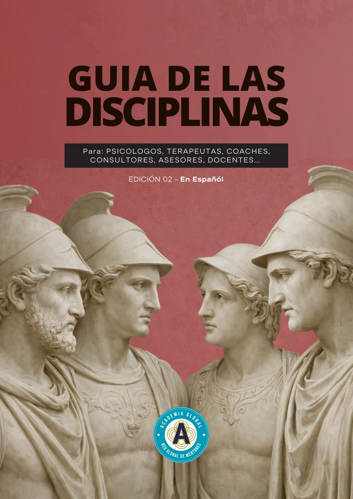
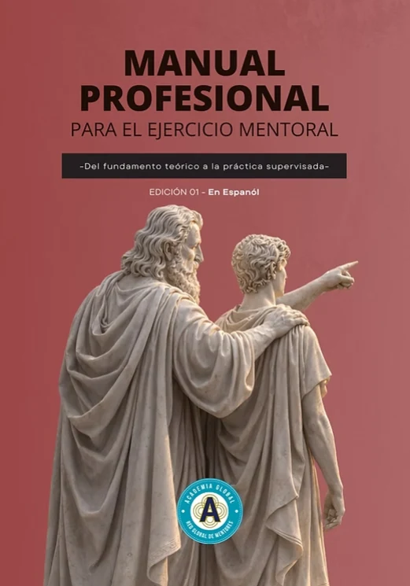
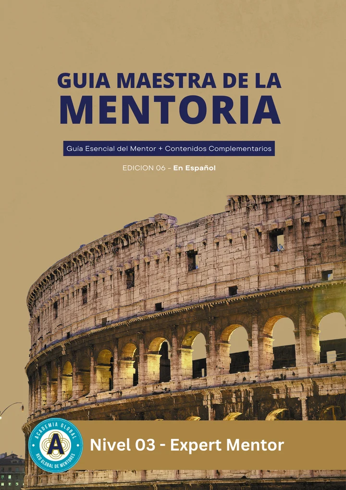
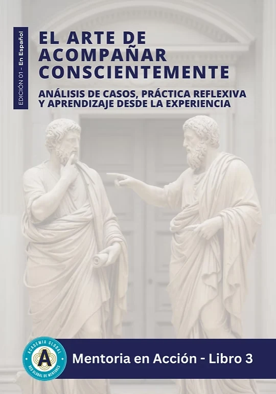
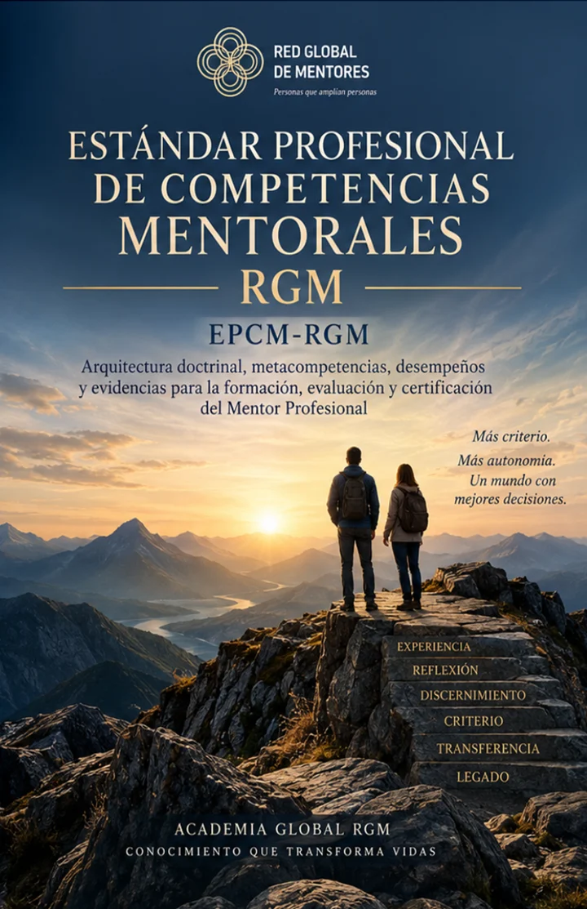

De la intuición al ejercicio profesional: contenidos de la Academia Global RGM y la Editorial RGM, ordenados según dónde estás en tu camino.



Tríada para profesionales
Mentoría para profesionales del desarrollo humano
Guía Integral de Disciplinas · Guía Esencial · Manual Profesional
Una formación intensiva para profesionales de disciplinas afines que buscan integrar la mentoría con excelencia y estándar internacional.
Ver la tríada →


Manual para universidades
Guía Maestra de la Mentoría
Nivel 01 · Nivel 02 · Nivel 03
La obra de referencia internacional para comprender y ejercer la mentoría con rigor, ética y estándar profesional, en tres niveles: Fundamentos, Dinámica Relacional y Praxis y Estándares.
Ver el manual →Tríada fundacional
La mentoría como camino humano
El origen · Los umbrales · La disciplina
Comprender qué es la mentoría antes de intentar ejercerla: una experiencia humana consciente, anterior a cualquier rol, certificación o método.
Ver la tríada →


Tríada funcional
El arte de acompañar conscientemente
Serie Mentoría en Acción
Para mentores en ejercicio: una arquitectura formativa que articula criterio, acción y reflexión, las tres dimensiones inseparables de la práctica consciente.
Ver la tríada →


Últimas ediciones
Lectura recomendada
EPCM-RGM · Arquitectura Doctrinal · 15 Metacompetencias
Acompañar desde la experiencia para desarrollar conciencia, criterio, responsabilidad y legado: la base metodológica que todo mentor experto debe dominar.
Ver las ediciones →Colección en desarrollo
Manuales del Mentor Experto
Guías estratégicas con modelos, herramientas y prácticas para distintos nichos: 12 manuales de especialización, con cuatro ya editados.
Acompañamiento de enfermedades críticasGestión de proyectosGestión y liderazgo corporativoEducación continua
Gratis para Miembros Activos →